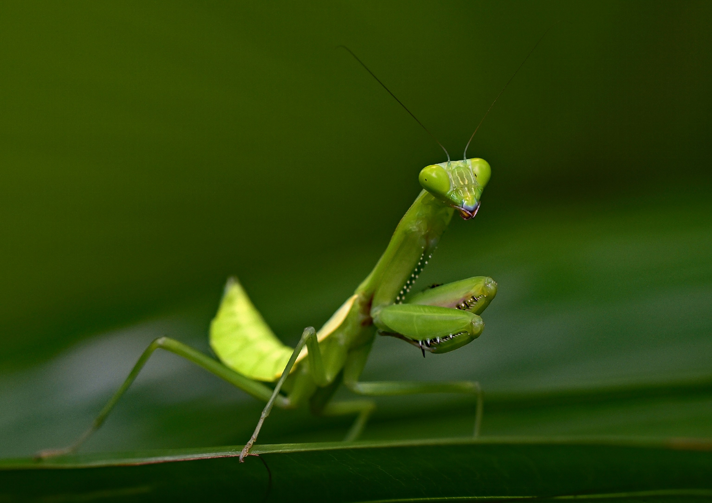

Effective Treatment Methods

Use low-toxicity sprays like neem oil, chili-garlic extracts, and soaps that are safe for crops and beneficial insects.

Introduce natural predators such as lacewings or praying mantis in affected areas to naturally control pest populations.